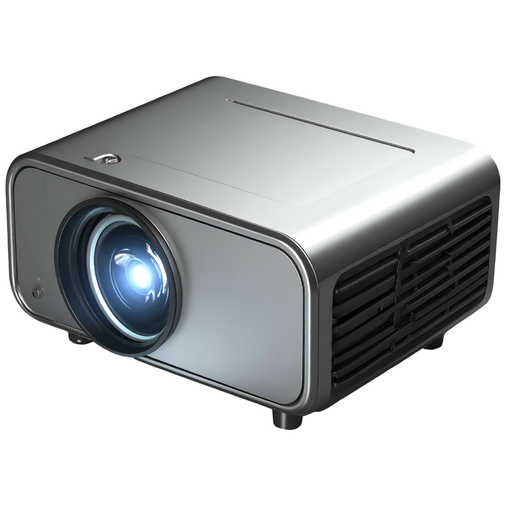

Home Projector
ViewBeam Model P220
A 1080p home projector designed to display images measuring from 30 to 120 inches with a brightness of 2,200 lumens.
- Produces images from 30 to 120 inches
- Provides 2,200 lumens of brightness
- Supports 1080p resolution
Home Projection

ViewBeam ProjectorModel P220
Flexible home projection
Designed for adjustable screen sizes
LumaForge ViewBeam P220 is a 1080p projector designed to display images measuring between 30 and 120 inches.
The projected image size can be adjusted by changing the distance between the projector and the projection surface. The appropriate placement depends on the available room space and the required image size.
ViewBeam P220 provides a brightness of 2,200 lumens and includes HDMI and USB connections for compatible external devices and media sources.
Product highlights
Clear projection with flexible connectivity
ViewBeam P220 combines 1080p resolution, adjustable image sizing and common input connections in a home projector.
30-to-120-inch projection
The projector supports image sizes ranging from 30 inches to a maximum recommended size of 120 inches.
2,200-lumen brightness
ViewBeam P220 provides a rated brightness of 2,200 lumens for projected video, images and other compatible content.
1080p resolution
The projector produces a 1080p image when used with a compatible source and suitable projection surface.
HDMI connection
The HDMI input supports connection to compatible computers, media players and other external video sources.
USB connection
The USB connection provides an additional option for compatible devices and supported media.

Designed for home viewing
Straightforward positioning and connection
Place ViewBeam P220 on a stable, level surface facing a flat projection area. Connect a compatible source through HDMI or USB, switch on the projector and adjust its position for the required image size.
- Adjustable image size
Change the projector’s distance from the viewing surface to produce an image between 30 and 120 inches.
- Common input options
Connect compatible sources through the available HDMI or USB connection.
- Full HD display
View compatible video and image content at 1080p resolution.
Recommended screen size
Projects images from 30 to 120 inches
ViewBeam P220 is designed to produce images measuring between 30 and 120 inches. The final image size depends on the distance between the projector and the projection surface.
Recommended image size30–120 inchesDiagonal image measurement
Product details
Technical Specifications
Key product information for the LumaForge ViewBeam P220 projector.
| Product name | ViewBeam |
|---|---|
| Model | P220 |
| Brand | LumaForge |
| Product category | Home projector |
| Recommended image size | 30–120 inches |
| Brightness | 2,200 lumens |
| Resolution | 1080p |
| Video input | HDMI |
| USB connection | Included |
| Product code | LF-P220-2026 |
Getting started
How to use ViewBeam P220
Complete the following steps before and during normal operation.
- 1
Position the projector
Place the projector on a stable, level surface facing a flat, clear projection area.
- 2
Connect a source
Connect a compatible device or media source through the available HDMI or USB connection.
- 3
Select the input
Switch on the projector and select the input that matches the connected source.
- 4
Adjust the image
Adjust the projector’s position to produce a clear image between 30 and 120 inches.
Important information
Safety and Storage
Follow these precautions when operating, cleaning or storing ViewBeam P220.
Important precautions
- Use the projector indoors in a dry environment.
- Place the projector on a stable, level surface.
- Do not block its ventilation openings.
- Do not look directly into the projection lens.
Use the projector carefully
- Use compatible HDMI or USB devices.
- Keep cables positioned to reduce trip hazards.
- Allow sufficient airflow around the projector.
- Disconnect the power before cleaning the exterior.
Keep the projector protected
Switch off the projector and allow it to cool before storage. Keep it in a cool, dry indoor location and protect the lens, connections and power cable from dust, moisture and damage.
Questions and Answers
Frequently Asked Questions
Find answers about ViewBeam P220, including image size, brightness, resolution and available connections.
Q What screen size is recommended for ViewBeam P220?
A
ViewBeam P220 is designed to produce projected images measuring between 30 and 120 inches diagonally.
Q What is the maximum recommended image size?
A
The maximum recommended image size for ViewBeam P220 is 120 inches.
Q How bright is ViewBeam P220?
A
ViewBeam P220 provides a rated brightness of 2,200 lumens.
Q What resolution does ViewBeam P220 support?
A
ViewBeam P220 supports 1080p resolution.
Q What connections are available?
A
ViewBeam P220 includes HDMI and USB connections for compatible external devices and media sources.
Q Who manufactures ViewBeam P220?
A
ViewBeam P220 is manufactured and distributed by LumaForge.